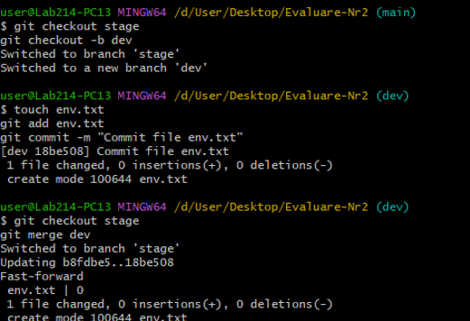
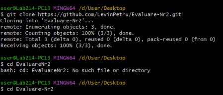
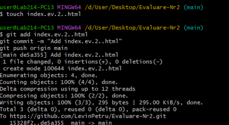
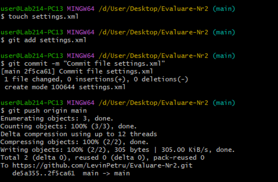
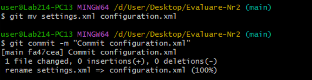
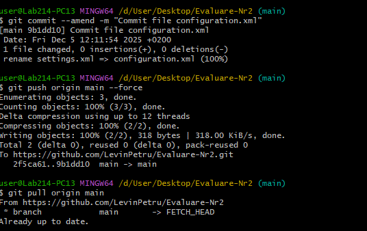
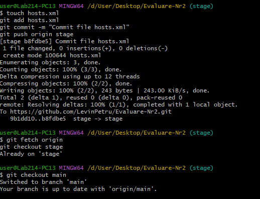
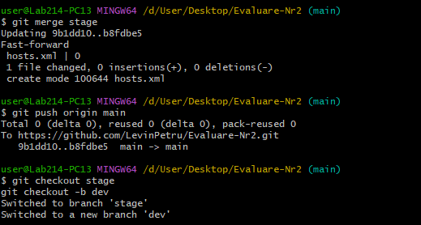
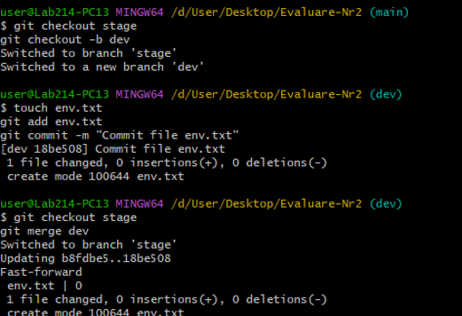

II. Branch
1. Crearea branch-ului dev și fișierului env.txt:
2. Merge dev → stage și push:

1. Clonarea repository-ului:
2. Crearea fișierului index.ev.2.html și commit:
3. Crearea și commit pentru settings.xml:
4. Redenumirea în configuration.xml și modificarea comentariului:
2. Revenirea la commitul anterior:
1. Crearea branch-ului stage și fișierului hosts.xml:
2. Merge stage → main și push:
1. Crearea branch-ului dev și fișierului env.txt:
2. Merge dev → stage și push:
1. Redenumirea branch-ului dev → develop și push: